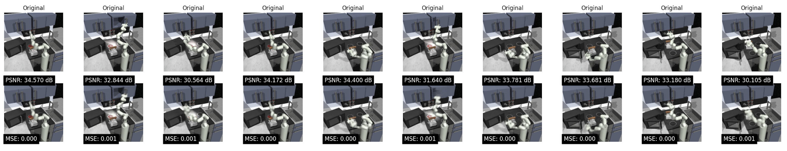

The introduction of the Behavior Transformer (BeT) [1] started to address the challenge of leveraging large, unlabeled, human-generated datasets for Offline Reinforcement Learning (RL) and Behavioral Cloning. It utilizes a transformative approach by incorporating action discretization and multi-task action correction techniques into standard transformer architectures, enabling effective modeling of complex, multi-modal human behaviors. BeT has demonstrated superior performance compared to other models in the Relay Kitchen environment, utilizing robot and object state observations. This success prompts us to explore its potential in scenarios involving partial observations, such as image sequences, which are more commonly encountered in real-life settings.
BeT is a new method for learning behaviors from rich, distributionally multi-modal data. It clusters continuous actions into discrete bins using k-means clustering, simplifying the representation of high-dimensional action spaces as categorical distributions.
We employ distinct prompts for each task to extract latent variables that serve as image embeddings. This technique allows us to tailor the model's input to the specific characteristics of each task, enhancing the relevance and accuracy of the generated embeddings.
We trained the model using all images extracted from the training set videos, employing the latent variables produced by the encoder as image embeddings. Building upon the foundational architecture of the original VAE, our approach incorporates the DIP-VAE model, which introduces an additional regularization term in the loss function. This term is designed to encourage the latent variables to exhibit statistical independence, thus promoting a disentangled representation that enhances interpretability and usability in downstream tasks. The output dimension of DIP-VAE: [32,64,128,256]
The figure shows the original image and reconstructed image from DIP-VAE on the validation set randomly selected from the videos.
We tried pre-trained ResNet 18 to generate image embeddings with an output dimension of 512.
To highlight the complexity of performing long sequences of actions, we use the Relay Kitchen Environment where a Franka robot manipulates a virtual kitchen environment. We use the relay policy learning dataset with 566 demonstrations collected by human participants wearing VR headsets. The participants completed a sequence of four object-interaction tasks in each episode . There are a total of seven interactable objects in the kitchen: a microwave, a kettle, a slide cabinet, a hinge cabinet, a light switch, and two burner knobs. This dataset contains two different kinds of multi-modality: one from the inherent noise in human demonstrations, and another from the demonstrators' intent.
We compare the performance of BeT with different encoders in learning from demonstrations. We measure the probability of n tasks being completed by the model within the allotted 280 timesteps. Evaluations are over 500 rollouts for all the BeT with encoders.
| 1 | 2 | 3 | 4 | 5 | |
|---|---|---|---|---|---|
| Original BeT | 0.99 | 0.93 | 0.71 | 0.44 | 0.02 |
| Resnet18 + BeT | 0.71 | 0.336 | 0.138 | 0.016 | 0 |
| DIPVAE (dim = 32)+ BeT | 0.826 | 0.294 | 0.07 | 0.004 | 0 |
| DIPVAE (dim = 64) + BeT | 0.944 | 0.682 | 0.436 | 0.152 | 0.02 |
| DIPVAE (dim = 128) + BeT | 0.986 | 0.738 | 0.502 | 0.184 | 0.014 |
| DIPVAE (dim = 256) + BeT | 0.978 | 0.744 | 0.53 | 0.126 | 0.012 |
| Experiment Name | Encoder Model | Observation Dimension | Dataset Size |
|---|---|---|---|
| original_BeT | / | 60 (only 30 is non-zero variables) | 566 |
| resnet18_512 | ResNet 18 | 512 | 566 |
| dipvae_32 | DIP-VAE | 32 | 566 |
| dipvae_64 | DIP-VAE | 64 | 566 |
| dipvae_128 | DIP-VAE | 128 | 566 |
| dipvae_256 | DIP-VAE | 256 | 566 |
| vlm_ds_32 | Lang-SAM | 1048576 | 32 |
| vlm_ds_100 | Lang-SAM | 1048576 | 100 |
In our project, we experimented with various encoder architectures fore image embdding, including VLM, VAE, and ResNet. Notably, DIP-VAE outperformed ResNet during rollout scenarios. This superior performance can be attributed to the DIP-VAE being trained directly on images from the training set videos, unlike the pre-trained ResNet-18, which was trained on the CIFAR dataset primarily for classification tasks. Consequently, ResNet-18 was less effective in accurately representing the specific observations required for our application.
Further observations revealed that although ResNet exhibited similar performance to DIP-VAE on the validation set, its performance significantly deteriorated during rollout. This discrepancy likely arises because the training set videos encompass a limited variety of states, whereas rollout scenarios introduce a broader range of states, including many that are unseen during training.